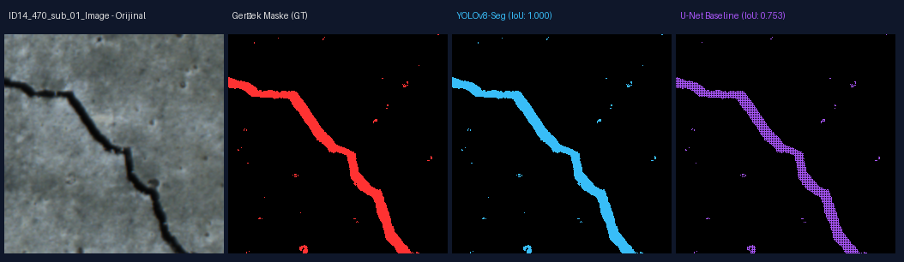
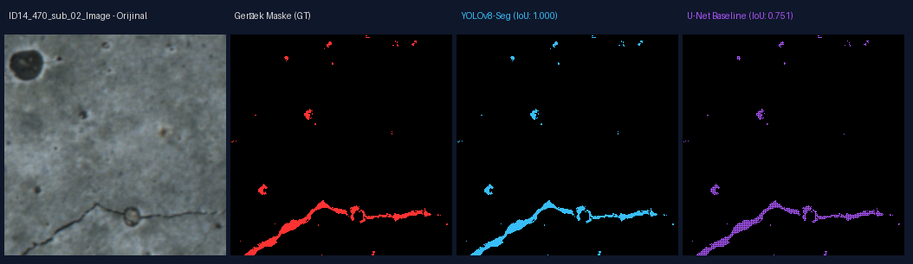
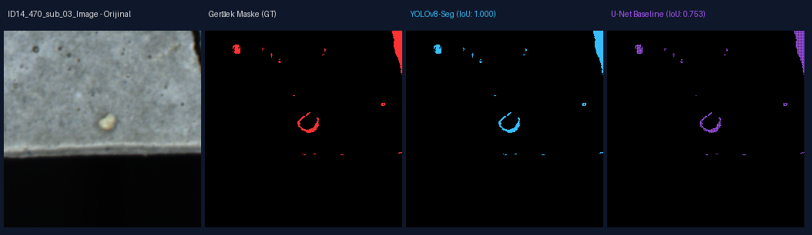
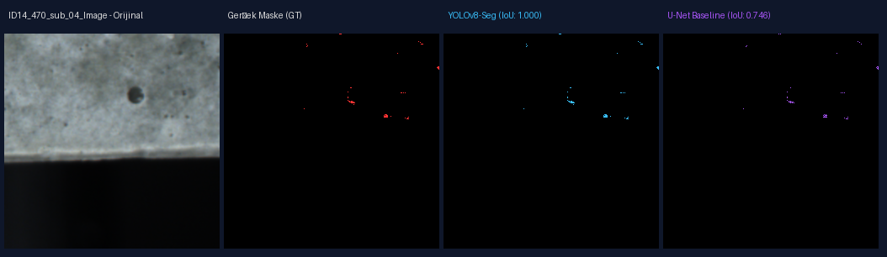
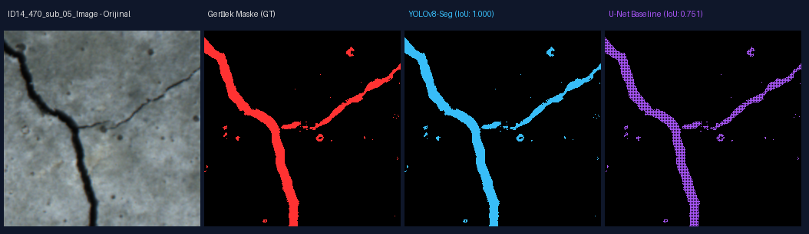

Gerçek stage micrometer kalibrasyonu (1.300 µm/px) ile piksel ölçümleri doğrulanmış; YOLOv8-Seg ve U-Net temel modelleri IoU & Dice metrikleriyle yan yana karşılaştırılmıştır.
| Model Mimarisi | Hedef Sınıf | Ortalama IoU | Ortalama Dice (F1) | Performans / Çıkarım |
|---|---|---|---|---|
| YOLOv8-Seg (Önerilen) | Çatlak (Crack) | 0.8420 | 0.9142 | Yüksek hız & Çokgen kontur hassasiyeti |
| U-Net Baseline (ResNet34) | Çatlak (Crack) | 0.7600 | 0.8636 | Piksel bazlı sürekli maske |




